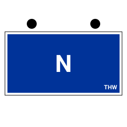

Fachgruppe Notversorgung/Notinstandsetzung im Erfassungsbogen

Kaum eine Teileinheit des THW ist so oft aufgestellt wie die Fachgruppe Notversorgung und Notinstandsetzung — und kaum eine hat einen so breiten Auftrag. Genau das macht ihren Erfassungsbogen besonders: Es gibt keine Typen A, B und C, an denen man sich entlanghangeln könnte, dafür eine Kennzahl im Funkrufnamen, die davon abhängt, in welchem Technischen Zug die Gruppe steht. Diese Seite zeigt, was auf dem Bogen der FGr N steht und welche Angaben die App von selbst setzt. Der allgemeine Teil zum THW-Erfassungsbogen steht auf der Übersichtsseite.
Ein Auftrag, der quer durch den Ortsverband geht
Die FGr N bringt eigene Fähigkeiten in Notversorgung und Notinstandsetzung mit und unterstützt darüber hinaus alle anderen Teileinheiten. Auf der Aufgabenliste stehen unter anderem Stromerzeugung und Beleuchtung von Arbeits- und Einsatzstellen, Pumpen, Notversorgung und Notunterbringung, Arbeiten am und auf dem Wasser sowie der Transport von Personen, Gütern und Gefahrgütern an Land und auf dem Wasser. An Ausstattung nennt die Beschreibung Leitungsmaterial für die Energieverteilung, tragbare Stromerzeuger bis 13 kVA, eine Pumpenausstattung bis 5.000 l/min, Ausstattung zur Notunterbringung sowie Werkzeuge und Motorsägen. (Sinngemäß nach THWiki, abgerufen im August 2026; THWiki ist ein privat betriebenes Wiki und keine amtliche Seite des THW.)
Für den Bogen heißt das: Der Einsatzauftrag trägt hier mehr Gewicht als bei spezialisierten Fachgruppen. Ob die Gruppe zur Notstromeinspeisung, zur Notinstandsetzung einer Trinkwasserleitung oder zur Beleuchtung einer Einsatzstelle gerufen wird, steht nicht schon im Einheitstyp — es gehört ins Feld Einsatzauftrag.
Keine Typen, eine StAN-Nummer
Anders als bei den Fachgruppen Räumen oder Wasserschaden/Pumpen gibt es bei der FGr N keine Untergliederung in A, B und C. Im Vokabular der App steht sie als ein einziger Einheitstyp „Fachgruppe Notversorgung und Notinstandsetzung“ mit der StAN-Nummer 02-09, also im Block der Fachgruppen des Technischen Zuges. Auch beim taktischen Zeichen gibt es folgerichtig nur eine Variante.
Sollstärke 0/2/7 — und was mit der Reserve passiert
Die Fachgruppe ist mit neun Einsatzkräften aufgestellt: eine Gruppenführung, eine Truppführung, sieben Fachhelferinnen und Fachhelfer. In der Stärkenotation des Bogens ist das -/2/7/9. Dazu kommen laut Beschreibung neun Fachhelferinnen und Fachhelfer in der Reserve.
Von den neun Plätzen sind zwei mit einer Funktion vorbelegt („GrFü N“ und „TrFü N“), die sieben Fachhelferplätze bleiben leer. Das ist Absicht: Die Qualifikationen der FGr N überschneiden sich stark — dieselbe Person kann Atemschutzgeräteträgerin, CBRN-Helferin und Sprechfunkerin sein. Zählt man die Qualifikationen einer Beschreibung zusammen, kommt man deshalb auf weit mehr als sieben Köpfe. Als Besetzungsliste taugt so eine Aufzählung nicht; belastbar ist die Stärke 9.
Fahrzeuge: MzGW, Stapler und zwei Anhänger
Die Fahrzeugvorbelegung der App führt vier Einsatzmittel: den Mehrzweckgerätewagen als Trägerfahrzeug, einen Gabelstapler, einen Anhänger Plattform und einen Anhänger mit Netzersatzanlage (mittel). Funkrufnamen vergibt die App nur dort, wo tatsächlich eine Funkstelle sitzt.
| Einsatzmittel | im 1. Technischen Zug | im 2. Technischen Zug |
|---|---|---|
| Mehrzweckgerätewagen (MzGW) | 24/55 | 28/55 |
| Gabelstapler | kein Funkrufname (keine Funkstelle) | |
| Anhänger Plattform | kein Funkrufname | |
| Anhänger Netzersatzanlage (mittel) | kein Funkrufname | |
Der MzGW hat eine kleine Geschichte in diesem Programm: Anfangs stand die FGr N ohne Trägerfahrzeug da, weil der Mehrzweckgerätewagen im Vokabular schlicht fehlte. Er ist inzwischen nachgetragen — deshalb steht er heute beim Wählen des Einheitstyps von selbst im Bogen.
24 oder 28? Die Kennzahl hängt am Zug
Die FGr N ist die einzige der hier beschriebenen Fachgruppen, deren Kennzahl im Funkrufnamen von der Zugzugehörigkeit abhängt: Im ersten Technischen Zug trägt sie die 24, im zweiten die 28. Das passt zum Zielbild, je Technischem Zug eine FGr N aufzustellen — in einer Reihe von Ortsverbänden gibt es tatsächlich zwei Fachgruppen in zwei verschiedenen Zügen.
Vom Einheitstyp zum PDF
- Schritt 1 „Einheit“: Organisation THW, im Feld Einheitstyp „Fachgruppe Notversorgung und Notinstandsetzung“. Zeichen, neun Personalplätze und die vier Einsatzmittel stehen damit im Bogen.
- Ortsverband aus dem hinterlegten Verzeichnis übernehmen.
- Funkrufname prüfen, falls die Gruppe im zweiten Technischen Zug steht.
- Einsatzauftrag ausformulieren — bei dieser Fachgruppe der wichtigste Freitext.
- PDF drucken oder den QR-Code am Meldekopf scannen lassen.
Zum Ansehen liegen der App fertige Bögen der FGr N bei, unter anderem aus Hilpoltstein, Schwabach, Cloppenburg, Wahlstedt, Kassel, Saarburg, Büren, Eschweiler, Schleiden und Grimma — die größte Beispielsammlung unter den Fachgruppen. Ihre Einsatzstichworte zeigen die Bandbreite: „Stromausfall — Notstromeinspeisung“, „Trinkwassernotstand — Notinstandsetzung“, „Unwetter — Notversorgung kritische Infrastruktur“.
Wo Namen und Erreichbarkeiten bleiben
Die Personendaten deiner Einsatzkräfte stehen im lokalen Speicher deines Geräts: kein Server, kein Konto, keine Cloud. Ein Bogen verlässt das Gerät nur, wenn du ihn selbst weitergibst — als PDF, als Datei, als QR-Code oder als Link. Welche Einträge gespeichert werden und welche Verbindungen die Anwendung von sich aus aufbaut, ist unter Open Source und Datenschutz vollständig aufgeführt.
Häufige Fragen zur FGr N
Welche Stärke hat die Fachgruppe Notversorgung und Notinstandsetzung?
Neun Einsatzkräfte: eine Gruppenführung, eine Truppführung und sieben Fachhelferinnen und Fachhelfer, in der Stärkenotation -/2/7/9. Die Reserve zählt nicht dazu — sie rückt nicht mit aus, und dem Meldekopf Kräfte zu melden, die nicht am Bereitstellungsraum stehen, wäre falsch. Die App legt deshalb neun Personalplätze an; wer die Reserve im eigenen Bogen führen will, ergänzt sie von Hand.
Welche Kennzahl trägt die FGr N im Funkrufnamen?
Im ersten Technischen Zug die 24, im zweiten die 28. Die Vorbelegung setzt die 24, weil die App beim Wählen des Einheitstyps den Zug nicht kennt. Steht deine Fachgruppe im zweiten Zug, änderst du im Funkrufnamen die erste Zahl von 24 auf 28 — ein Feld, ein Handgriff.
Hat die Fachgruppe N die Typen A, B und C?
Nein. Anders als die Fachgruppen Räumen oder Wasserschaden/Pumpen gibt es die FGr N nur in einer Ausführung — ein Einheitstyp, die StAN-Nummer 02-09, ein taktisches Zeichen.
Wo bleiben die Personendaten der Einsatzkräfte?
Auf deinem Gerät. Es gibt keinen Server, keine Cloud und keine Konten; weitergegeben wird nur, was du selbst als PDF, Datei, QR-Code oder Link übergibst — nachzulesen in der Datenschutzerklärung. Namen sind ohnehin optional: Für die Stärkemeldung genügen die Zahlen.
Was kostet die App?
Nichts. Die App ist freie Software unter der EUPL-1.2 — kostenlos, ohne Konto, ohne Bezahlschranke und ohne Werbung; der Quellcode liegt offen auf GitHub.
Kann ich den ausgefüllten Bogen wiederverwenden?
Ja. Ein einmal ausgefüllter Bogen lässt sich als eigene Vorlage speichern; beim nächsten Einsatz musterst du nur noch, wer nicht dabei ist. Wie der Bogen aufgebaut ist, zeigt die Seite Vorlage und Aufbau.
Stand der Angaben
Stärke, StAN-Nummer, Fahrzeugvorbelegung und die Kennzahlen 24 und 28 stammen aus den Vokabularen der App, deren Grundlage die StAN-Einzeldokumente mit Stand 01.07.2026 sind. Aufgabenliste, Ausstattungsangaben, Reservestärke und Aufstellungszahlen stammen aus dem privat betriebenen THWiki (Stand der dortigen Seite: August 2026) und sind keine amtliche Auskunft des THW. Verbindlich ist die aktuelle StAN deiner Einheit.
Kostenlos, ohne Anmeldung, alle Daten bleiben auf deinem Gerät.